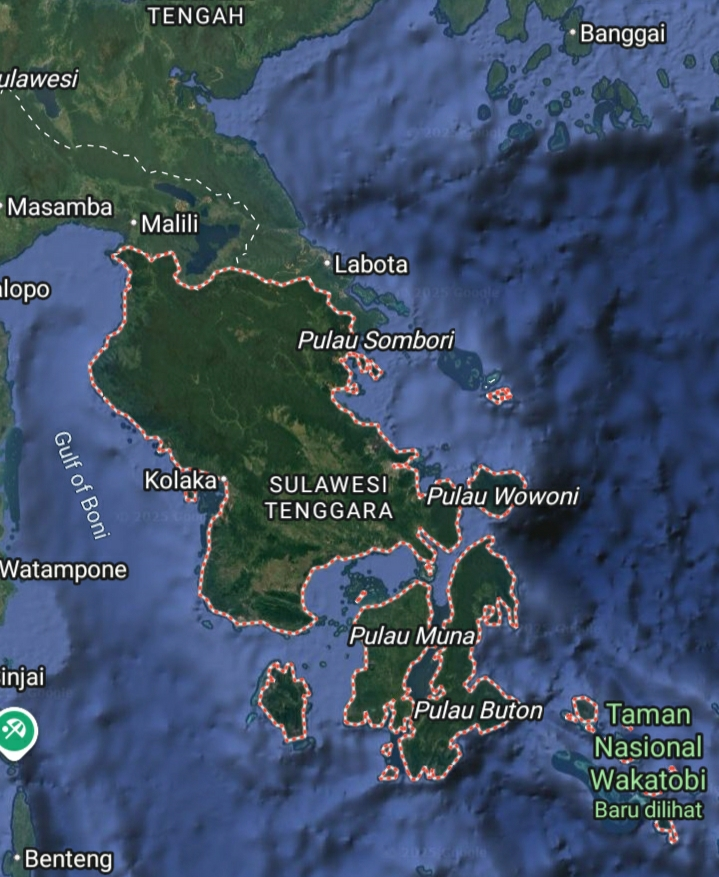
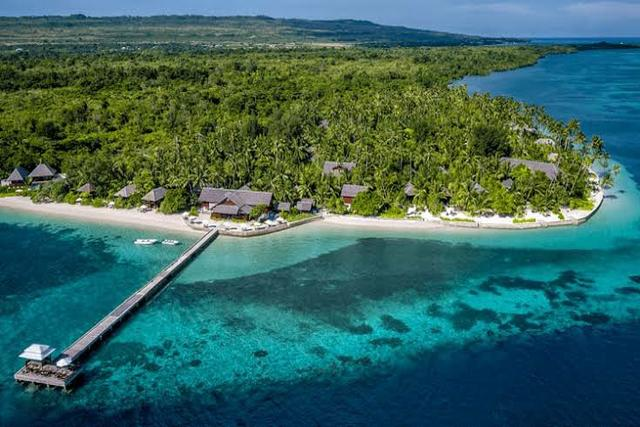
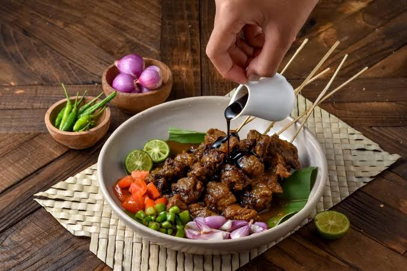
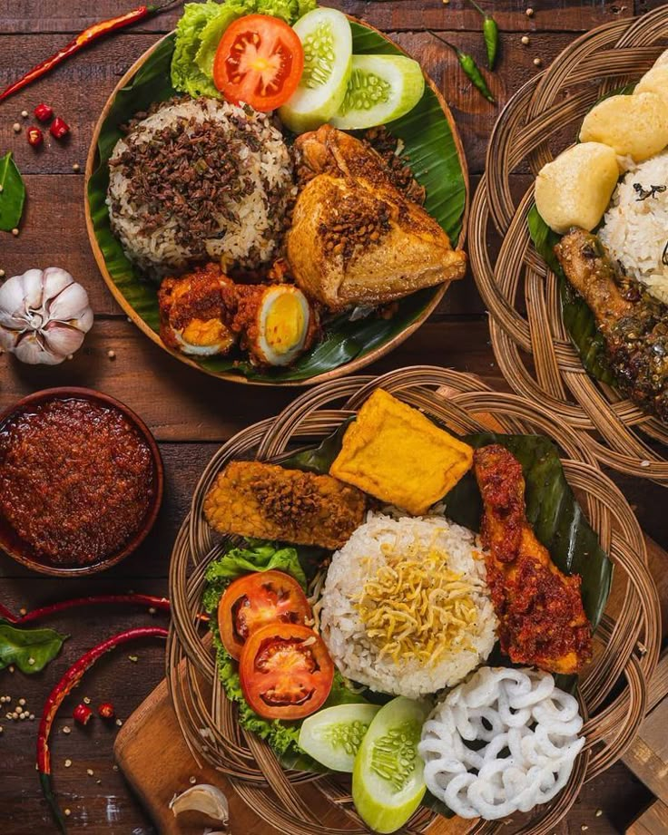
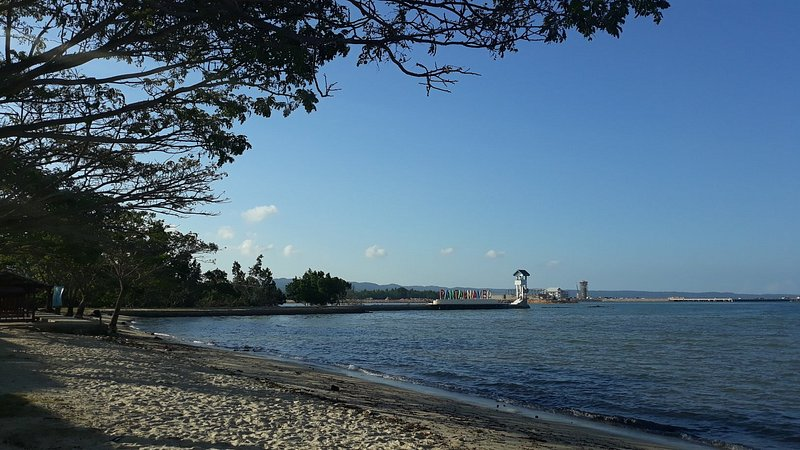
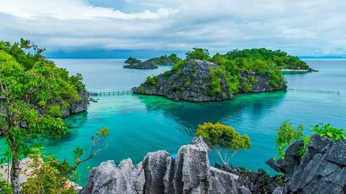

- Chiru Vishnoi
- 24.08.2021
Exploring the Beauty of Wakatobi
Wakatobi, located in Southeast Sulawesi, Indonesia, is famous for its stunning marine biodiversity. It’s a paradise for divers and nature enthusiasts alike.
Indonesia is a country that has many destinations that can be explored, one of which is the destination in Southeast Sulawesi.
This travel focuses only on Indonesia with many destinations that can be explored.




Wakatobi, located in Southeast Sulawesi, Indonesia, is famous for its stunning marine biodiversity. It’s a paradise for divers and nature enthusiasts alike.

Pantai Nambo offers a serene atmosphere, perfect for a relaxing day by the sea. The white sandy beach and crystal-clear water make it an ideal spot for unwinding.

Labengki Island, a hidden gem in Southeast Sulawesi, offers breathtaking landscapes, clear waters, and vibrant coral reefs, perfect for adventurous travelers.

Danau Biru in Kolaka is a stunning blue lake surrounded by lush greenery. This natural wonder is a must-visit for anyone in the area, offering picturesque views and a peaceful environment.